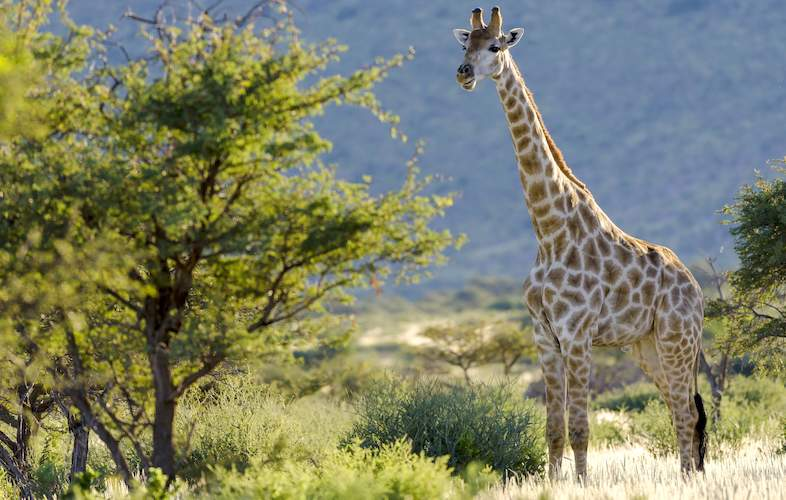

Giraffe
The giraffe (Giraffa) is an African artiodactyl mammal, the tallest living terrestrial animal and the largest ruminant. It is traditionally considered to be one species, Giraffa camelopardalis, with nine subspecies. However, the existence of up to eight extant giraffe species has been described, based upon research into the mitochondrial and nuclear DNA, as well as morphological measurements of Giraffa. Seven other species are extinct, prehistoric species known from fossils.
The giraffe's chief distinguishing characteristics are its extremely long neck and legs, its horn-like ossicones, and its distinctive coat patterns. It is classified under the family Giraffidae, along with its closest extant relative, the okapi. Its scattered range extends from Chad in the north to South Africa in the south, and from Niger in the west to Somalia in the east. Giraffes usually inhabit savannahs and woodlands. Their food source is leaves, fruits and flowers of woody plants, primarily acacia species, which they browse at heights most other herbivores cannot reach.
WHERE WILL YOU FIND THEM
Its scattered range extends from Chad in the north to South Africa in the south, and from Niger in the west to Somalia in the east. Giraffes usually inhabit savannahs and woodlands.